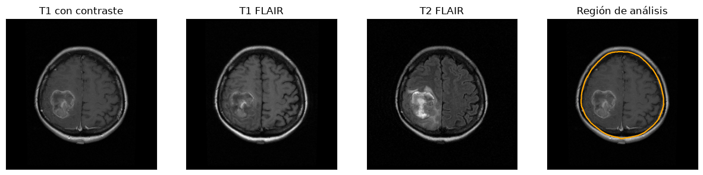
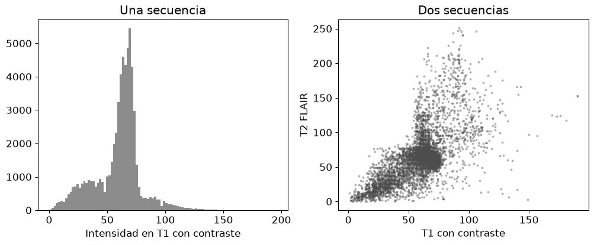
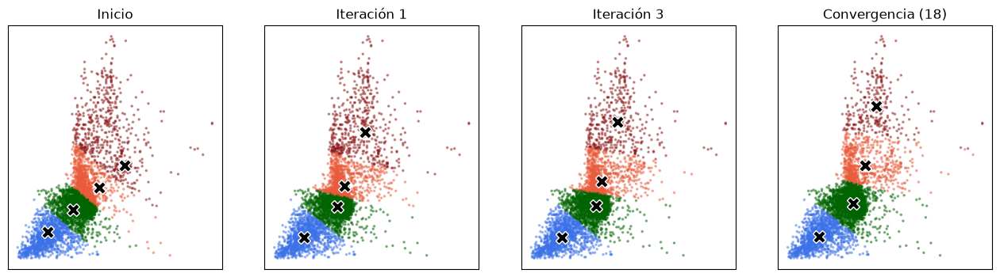
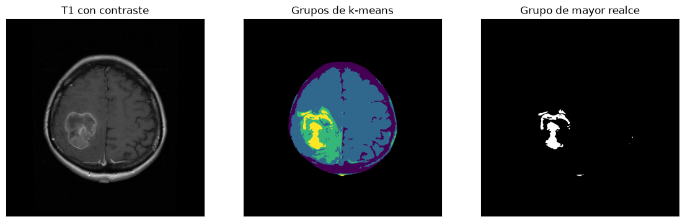
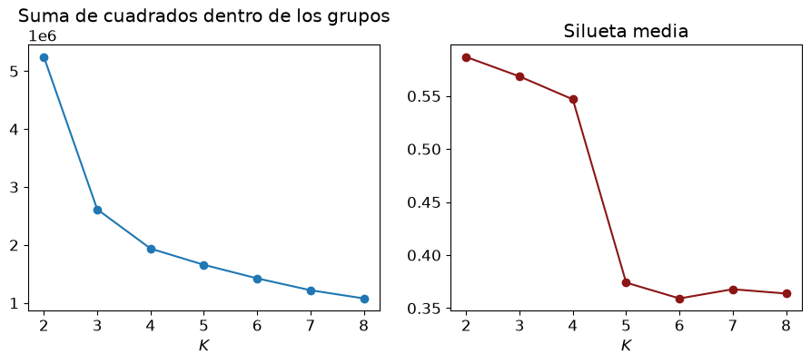
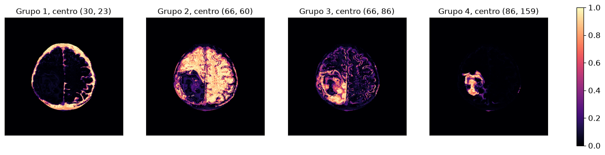
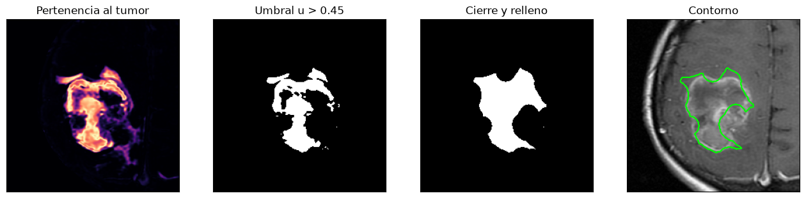
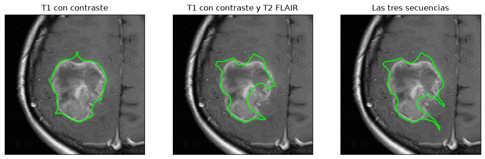
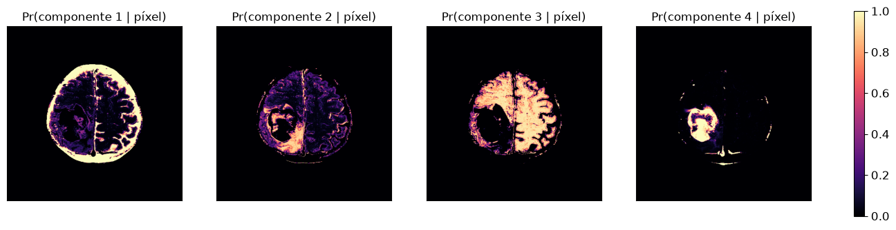
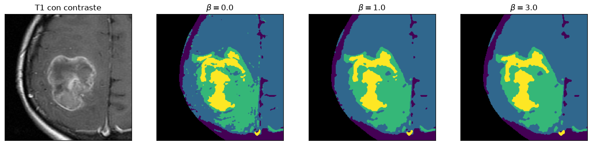

import os, urllib.request
import numpy as np
import matplotlib.pyplot as plt
from PIL import Image
from scipy import ndimage as ndi
plt.rcParams.update({"figure.figsize": (6, 4.5), "font.size": 12})
COLORES = np.array(["#3C72E8", "#006400", "#E85C3C", "#8C1515", "#A01FEF"])
def sin_ejes(ax, titulo=None):
ax.set_xticks([]); ax.set_yticks([])
if titulo:
ax.set_title(titulo, fontsize=12)Segmentación de un glioblastoma por agrupamiento

Este cuaderno segmenta un glioblastoma en resonancia magnética sin una segmentación de referencia, agrupando los píxeles según sus intensidades en tres secuencias.
- Cargar las tres secuencias y aislar el cerebro.
- Ver cada píxel como un punto del espacio de características.
- Agrupar con k-means escrito desde cero y elegir el número de grupos.
- Agrupar con fuzzy c-means y pasar del mapa de pertenencia al contorno del tumor.
- Comparar con una mezcla de gaussianas.
- Eliminar los píxeles sueltos con un campo aleatorio de Markov.
Las imágenes
Son tres secuencias de un mismo corte axial de un paciente con glioblastoma, registradas entre sí, de \(512 \times 512\) píxeles con valores de 0 a 255.
- T1 con contraste (gadolinio). El borde activo del tumor capta el contraste y se ve brillante.
- T1 FLAIR.
- T2 FLAIR. El edema que rodea al tumor se ve brillante.
El mismo píxel corresponde al mismo punto del cerebro en las tres imágenes.
URL = "https://raw.githubusercontent.com/aavelozb/aavelozb.github.io/main/data/gbm-im17/"
SECUENCIAS = [("IM17_axt1c.tiff", "T1 con contraste"), ("IM17_axt1FLAIR.tiff", "T1 FLAIR"),
("IM17_axt2FLAIR.tiff", "T2 FLAIR")]
for f, _ in SECUENCIAS:
if not os.path.exists(f):
urllib.request.urlretrieve(URL + f, f)
VOL = np.dstack([np.array(Image.open(f).convert("L")).astype(float) for f, _ in SECUENCIAS])
print("Tamaño:", VOL.shape)Tamaño: (512, 512, 3)La región de análisis
El cráneo y la grasa del cuero cabelludo son tan brillantes como el tumor, y hay que descartarlos. Se umbraliza la imagen suavizada para obtener la cabeza, se rellenan sus huecos, se erosiona con un disco para quitar el borde y se conserva la región conexa más grande.
def disco(r):
y, x = np.ogrid[-r:r + 1, -r:r + 1]
return x*x + y*y <= r*r
cabeza = ndi.binary_fill_holes(ndi.gaussian_filter(VOL[:, :, 0], 2) > 25)
erosion = ndi.binary_erosion(cabeza, disco(20))
lab, n = ndi.label(erosion)
CEREBRO = lab == 1 + np.argmax(ndi.sum(erosion, lab, range(1, n + 1)))
fig, ax = plt.subplots(1, 4, figsize=(15, 4))
for a, k in zip(ax, range(3)):
a.imshow(VOL[:, :, k], cmap="gray", vmin=0, vmax=255); sin_ejes(a, SECUENCIAS[k][1])
ax[3].imshow(VOL[:, :, 0], cmap="gray", vmin=0, vmax=255)
ax[3].contour(CEREBRO, levels=[0.5], colors=["orange"], linewidths=1.5); sin_ejes(ax[3], "Región de análisis")
plt.show()
print("Píxeles del cerebro:", CEREBRO.sum())
Píxeles del cerebro: 63640Cada píxel es un punto
Con una secuencia, cada píxel es un número y el espacio de características es el histograma. Con dos secuencias, cada píxel es un punto del plano y aparecen nubes que ninguna secuencia separa por sí sola.
XYZ = VOL[CEREBRO] # n x 3, un píxel por fila
X2 = XYZ[:, [0, 2]] # T1 con contraste y T2 FLAIR
SUB = np.random.default_rng(0).choice(len(X2), 6000, replace=False) # submuestra para dibujar
def a_imagen(valores, relleno=np.nan):
salida = np.full(CEREBRO.shape, relleno, dtype=float); salida[CEREBRO] = valores
return salida
fig, ax = plt.subplots(1, 2, figsize=(12, 4.2))
ax[0].hist(XYZ[:, 0], bins=100, color="0.55"); ax[0].set_xlabel("Intensidad en T1 con contraste"); ax[0].set_title("Una secuencia")
ax[1].scatter(X2[SUB, 0], X2[SUB, 1], s=3, color="0.3", alpha=0.35)
ax[1].set_xlabel("T1 con contraste"); ax[1].set_ylabel("T2 FLAIR"); ax[1].set_title("Dos secuencias")
plt.show()
k-means desde cero
El algoritmo de Lloyd alterna dos pasos hasta que la partición no cambia.
- Asignar cada punto al centroide más cercano.
- Actualizar cada centroide como la media de sus puntos.
Cada paso baja la suma de cuadrados dentro de los grupos, \(J = \sum_k\sum_{i \in C_k}\|\mathbf{x}_i - \boldsymbol\mu_k\|^2\). Para ver el recorrido, los cuatro centroides parten sobre la diagonal, lejos de los datos.
def kmeans(X, K, V0=None, semilla=0, iteraciones=100):
r = np.random.default_rng(semilla)
V = X[r.choice(len(X), K, replace=False)].astype(float) if V0 is None else np.array(V0, float)
historia, J, etiquetas = [V.copy()], [], None
for _ in range(iteraciones):
d = ((X[:, None, :] - V[None])**2).sum(-1)
nuevas = d.argmin(1)
J.append(d[np.arange(len(X)), nuevas].sum())
for k in range(K):
if np.any(nuevas == k):
V[k] = X[nuevas == k].mean(0)
historia.append(V.copy())
if etiquetas is not None and np.array_equal(nuevas, etiquetas):
break
etiquetas = nuevas
return etiquetas, V, historia, J
K = 4
V0 = np.array([[30., 30.], [55., 55.], [80., 80.], [105., 105.]])
Xs = X2[SUB]
_, _, hist, J = kmeans(Xs, K, V0=V0)
pasos = [0, 1, 3, len(hist) - 1]
fig, ax = plt.subplots(1, 4, figsize=(16, 4))
for a, t in zip(ax, pasos):
V = hist[t]; l = ((Xs[:, None, :] - V[None])**2).sum(-1).argmin(1)
a.scatter(Xs[:, 0], Xs[:, 1], s=2.5, c=COLORES[l], alpha=0.4)
a.plot(*V.T, "X", color="k", ms=12, mec="w")
sin_ejes(a, "Inicio" if t == 0 else ("Convergencia (%d)" % t if t == pasos[-1] else "Iteración %d" % t))
plt.show()
Ahora con todos los píxeles. Los grupos se ordenan por la intensidad media en T1 con contraste, de modo que el último grupo es el de mayor realce.
lab_km, V_km, _, _ = kmeans(X2, K, V0=V0)
orden = np.argsort(V_km[:, 0]); remap = np.empty(K, int); remap[orden] = np.arange(K)
lab_km, V_km = remap[lab_km], V_km[orden]
E_km = a_imagen(lab_km, -1)
tumor_km = E_km == K - 1
fig, ax = plt.subplots(1, 3, figsize=(14, 4.5))
ax[0].imshow(VOL[:, :, 0], cmap="gray"); sin_ejes(ax[0], "T1 con contraste")
ax[1].imshow(np.ma.masked_where(E_km < 0, E_km), cmap="viridis"); ax[1].set_facecolor("black"); sin_ejes(ax[1], "Grupos de k-means")
ax[2].imshow(tumor_km, cmap="gray"); sin_ejes(ax[2], "Grupo de mayor realce")
plt.show()
print("Centroides (T1 con contraste, T2 FLAIR):\n", V_km.round(1))
print("Componentes conexas del grupo de mayor realce:", ndi.label(tumor_km, structure=np.ones((3, 3)))[1])
Centroides (T1 con contraste, T2 FLAIR):
[[ 31.5 24.4]
[ 64.2 62. ]
[ 76. 103.3]
[ 88.9 169.9]]
Componentes conexas del grupo de mayor realce: 12El grupo de mayor realce contiene el tumor, pero también píxeles sueltos en el resto del cerebro. k-means decide cada píxel por sus intensidades, sin mirar a sus vecinos.
Como verificación, scikit-learn llega prácticamente a la misma partición. Las pocas diferencias son píxeles del borde entre dos grupos, que dependen del criterio de detención.
from sklearn.cluster import KMeans
from sklearn.metrics import adjusted_rand_score
sk = KMeans(K, init=V0, n_init=1).fit(X2)
print("Índice de Rand ajustado entre nuestra partición y la de scikit-learn:", adjusted_rand_score(lab_km, sk.labels_))Índice de Rand ajustado entre nuestra partición y la de scikit-learn: 0.9985359113295967¿Cuántos grupos?
\(J\) siempre baja al agregar grupos, así que no sirve sola para elegir \(K\). Se busca un codo en la curva y se mira la silueta media, que compara la distancia de cada punto a su grupo con la distancia al grupo vecino.
from sklearn.metrics import silhouette_score
Ks = range(2, 9); inercias, siluetas = [], []
for k in Ks:
km = KMeans(k, n_init=10, random_state=0).fit(Xs)
inercias.append(km.inertia_); siluetas.append(silhouette_score(Xs, km.labels_))
fig, ax = plt.subplots(1, 2, figsize=(11, 3.8))
ax[0].plot(list(Ks), inercias, "o-"); ax[0].set_xlabel("$K$"); ax[0].set_title("Suma de cuadrados dentro de los grupos")
ax[1].plot(list(Ks), siluetas, "o-", color="#8C1515"); ax[1].set_xlabel("$K$"); ax[1].set_title("Silueta media")
plt.show()
Aquí la silueta es máxima con \(K = 2\) y cae con fuerza después de \(K = 4\). Los índices dan una orientación, no una respuesta. En una imagen médica el número de grupos también se elige con el conocimiento de los tejidos presentes: líquido cefalorraquídeo, sustancia blanca, sustancia gris con edema y tumor que realza.
Fuzzy c-means desde cero
En el borde entre dos tejidos, un píxel contiene un poco de cada uno. Fuzzy c-means asigna a cada píxel un grado de pertenencia \(u_{ik} \in [0, 1]\) a cada grupo, con \(\sum_k u_{ik} = 1\), y minimiza \[J_m = \sum_{i}\sum_{k}u_{ik}^{\,m}\,\|\mathbf{x}_i - \mathbf{v}_k\|^2, \qquad m > 1 .\] Las dos actualizaciones son \[\mathbf{v}_k = \frac{\sum_i u_{ik}^{\,m}\mathbf{x}_i}{\sum_i u_{ik}^{\,m}}, \qquad u_{ik} = \left[\sum_{j}\left(\frac{\|\mathbf{x}_i - \mathbf{v}_k\|}{\|\mathbf{x}_i - \mathbf{v}_j\|}\right)^{2/(m-1)}\right]^{-1}.\]
def fcm(X, K, V0, m=2.0, iteraciones=300, tol=1e-5):
V = np.array(V0, float)
for _ in range(iteraciones):
d2 = ((X[:, None, :] - V[None])**2).sum(-1) + 1e-10
U = 1.0/((d2[:, :, None]/d2[:, None, :])**(1/(m - 1))).sum(-1)
Vn = ((U**m).T @ X)/(U**m).sum(0)[:, None]
if np.max(np.abs(Vn - V)) < tol:
return U, Vn
V = Vn
return U, V
U, V_fcm = fcm(X2, K, V_km)
fig, ax = plt.subplots(1, K, figsize=(16, 4))
for k, a in enumerate(ax):
h = a.imshow(a_imagen(U[:, k], 0), cmap="magma", vmin=0, vmax=1)
sin_ejes(a, "Grupo %d, centro (%d, %d)" % (k + 1, round(V_fcm[k, 0]), round(V_fcm[k, 1])))
fig.colorbar(h, ax=ax, fraction=0.012)
plt.show()
print("Fracción de píxeles con pertenencia máxima menor que 0,6:", np.mean(U.max(1) < 0.6).round(3))
Fracción de píxeles con pertenencia máxima menor que 0,6: 0.188Del mapa de pertenencia al contorno
- Umbralizar la pertenencia al grupo del tumor.
- Cerrar con un disco, para unir el anillo de realce.
- Rellenar los huecos, para incluir el centro necrótico, que no capta contraste.
- Conservar la región conexa más grande y dibujar su borde.
LAMBDA = 0.45
u_tumor = a_imagen(U[:, -1], 0)
def contorno(u, umbral=LAMBDA):
m = ndi.binary_fill_holes(ndi.binary_closing(u > umbral, disco(12)))
l, n = ndi.label(m)
return l == 1 + np.argmax(ndi.sum(m, l, range(1, n + 1)))
final = contorno(u_tumor)
cy, cx = np.argwhere(final).mean(0).astype(int)
W = (slice(max(cy - 110, 0), cy + 110), slice(max(cx - 110, 0), cx + 110)) # ventana alrededor del tumor
fig, ax = plt.subplots(1, 4, figsize=(16, 4.2))
ax[0].imshow(u_tumor[W], cmap="magma", vmin=0, vmax=1); sin_ejes(ax[0], "Pertenencia al tumor")
ax[1].imshow((u_tumor > LAMBDA)[W], cmap="gray"); sin_ejes(ax[1], "Umbral u > %.2f" % LAMBDA)
ax[2].imshow(ndi.binary_fill_holes(ndi.binary_closing(u_tumor > LAMBDA, disco(12)))[W], cmap="gray"); sin_ejes(ax[2], "Cierre y relleno")
ax[3].imshow(VOL[:, :, 0][W], cmap="gray"); ax[3].contour(final[W], levels=[0.5], colors=["lime"], linewidths=1.5)
sin_ejes(ax[3], "Contorno")
plt.show()
print("Área del tumor (píxeles):", final.sum())
Área del tumor (píxeles): 5057Una, dos o tres secuencias
El mismo procedimiento con sólo T1 con contraste, con dos secuencias y con las tres. El índice de Dice, \(2|A \cap B|/(|A| + |B|)\), mide cuánto coinciden dos contornos.
def tumor(X, V0):
U_, V_ = fcm(X, K, V0)
return contorno(a_imagen(U_[:, np.argmax(V_[:, 0])], 0))
def dice(a, b):
return 2*np.sum(a & b)/(a.sum() + b.sum())
X1 = XYZ[:, [0]]
t1 = tumor(X1, np.linspace(X1.min(), X1.max(), K)[:, None])
t2 = tumor(X2, V0)
t3 = tumor(XYZ, np.column_stack([np.linspace(XYZ[:, j].min(), XYZ[:, j].max(), K) for j in range(3)]))
fig, ax = plt.subplots(1, 3, figsize=(13, 4.5))
for a, t, tit in zip(ax, [t1, t2, t3], ["T1 con contraste", "T1 con contraste y T2 FLAIR", "Las tres secuencias"]):
a.imshow(VOL[:, :, 0][W], cmap="gray"); a.contour(t[W], levels=[0.5], colors=["lime"], linewidths=1.5); sin_ejes(a, tit)
plt.show()
print("Áreas:", t1.sum(), t2.sum(), t3.sum())
print("Dice entre una y dos secuencias:", round(dice(t1, t2), 3), " entre dos y tres:", round(dice(t2, t3), 3))
Áreas: 6435 5057 6168
Dice entre una y dos secuencias: 0.805 entre dos y tres: 0.901Mezcla de gaussianas
Una mezcla de gaussianas ajustada por el algoritmo EM da, para cada píxel, la probabilidad de cada tejido. A diferencia de k-means, cada grupo tiene su propia forma (una elipse) y su propia proporción.
from sklearn.mixture import GaussianMixture
gm = GaussianMixture(K, covariance_type="full", random_state=2).fit(X2)
o = np.argsort(gm.means_[:, 0]); P = gm.predict_proba(X2)[:, o]
fig, ax = plt.subplots(1, K, figsize=(16, 4))
for k, a in enumerate(ax):
h = a.imshow(a_imagen(P[:, k], 0), cmap="magma", vmin=0, vmax=1); sin_ejes(a, "Pr(componente %d | píxel)" % (k + 1))
fig.colorbar(h, ax=ax, fraction=0.012)
plt.show()
print("Rand ajustado entre la mezcla y k-means:", round(adjusted_rand_score(lab_km, P.argmax(1)), 3))
Rand ajustado entre la mezcla y k-means: 0.51Campos aleatorios de Markov
Ningún método anterior usa la posición de los píxeles. Un campo aleatorio de Markov agrega la preferencia por que los vecinos tengan la misma etiqueta. La segmentación minimiza la energía \[E(\mathbf{x}) = \sum_{s}D_s(x_s) + \beta\sum_{\{s,r\}\ \text{vecinos}}\mathbf{1}\{x_s \neq x_r\},\] donde \(D_s(k) = \frac{1}{2}(\mathbf{y}_s - \boldsymbol\mu_k)^\top\boldsymbol\Sigma_k^{-1}(\mathbf{y}_s - \boldsymbol\mu_k) + \frac{1}{2}\log|\boldsymbol\Sigma_k|\) mide cuánto se aleja el píxel \(s\) de la clase \(k\), y \(\beta\) fija cuánto pesan los vecinos.
El modo condicional iterado (ICM) asigna a cada píxel la etiqueta que minimiza su propia energía con los vecinos fijos, \(x_s \leftarrow \arg\min_k\,[D_s(k) + \beta\,n_s(k)]\), donde \(n_s(k)\) es el número de vecinos con etiqueta distinta de \(k\). Los píxeles se actualizan por colores (los de igual paridad de fila y columna no son vecinos), y así cada actualización no sube la energía.
VEC = [(-1, 0), (1, 0), (0, -1), (0, 1), (-1, -1), (-1, 1), (1, -1), (1, 1)]
def termino_datos(Y, mu, S):
D = np.empty((len(mu),) + Y.shape[:2])
for k in range(len(mu)):
d = Y - mu[k]
D[k] = 0.5*np.einsum("hwi,ij,hwj->hw", d, np.linalg.inv(S[k]), d) + 0.5*np.log(np.linalg.det(S[k]))
return D
def icm(D, beta, mascara, barridos=30):
Kc, H, Wd = D.shape
x = np.where(mascara, D.argmin(0), -1)
yy, xx = np.mgrid[:H, :Wd]
colores = [(yy % 2 == a) & (xx % 2 == b) for a in (0, 1) for b in (0, 1)]
for _ in range(barridos):
cambios = 0
for c in colores:
P_ = np.pad(x, 1, constant_values=-1)
iguales = np.zeros((Kc, H, Wd)); nv = np.zeros((H, Wd))
for dy, dx in VEC:
v = P_[1 + dy:1 + dy + H, 1 + dx:1 + dx + Wd]
nv += v >= 0
for k in range(Kc):
iguales[k] += v == k
nuevo = (D + beta*(nv[None] - iguales)).argmin(0)
sel = c & mascara
cambios += np.sum(x[sel] != nuevo[sel]); x[sel] = nuevo[sel]
if cambios == 0:
break
return x
mu_k = np.array([X2[lab_km == k].mean(0) for k in range(K)])
S_k = np.array([np.cov(X2[lab_km == k].T) + 1e-3*np.eye(2) for k in range(K)])
D = termino_datos(VOL[:, :, [0, 2]], mu_k, S_k)
fig, ax = plt.subplots(1, 4, figsize=(16, 4.2))
ax[0].imshow(VOL[:, :, 0][W], cmap="gray"); sin_ejes(ax[0], "T1 con contraste")
for a, beta in zip(ax[1:], [0.0, 1.0, 3.0]):
x = icm(D, beta, CEREBRO)
a.imshow(np.ma.masked_where(x < 0, x)[W], cmap="viridis", vmin=0, vmax=K - 1); a.set_facecolor("black")
sin_ejes(a, r"$\beta = %.1f$" % beta)
print(f"beta = {beta}: componentes conexas del grupo de mayor realce = {ndi.label(x == K - 1, structure=np.ones((3, 3)))[1]}")
plt.show()beta = 0.0: componentes conexas del grupo de mayor realce = 12
beta = 1.0: componentes conexas del grupo de mayor realce = 8
beta = 3.0: componentes conexas del grupo de mayor realce = 5
Con \(\beta = 0\) cada píxel se decide solo y se recupera la clasificación por intensidades. Al subir \(\beta\) desaparecen los píxeles sueltos. Con \(\beta\) muy grande el modelo empieza a borrar estructuras finas.
Ejercicios
- Repita k-means con \(K = 3\) y \(K = 5\). ¿Qué tejido se une o se divide?
- Cambie el umbral \(\lambda\) del contorno a 0,3 y a 0,6. ¿Cuánto cambia el área del tumor?
- Cambie el exponente de fuzzy c-means a \(m = 1{,}2\) y a \(m = 4\), y compare los mapas de pertenencia.
- Use la mezcla de gaussianas, en lugar de k-means, para calcular las medias y covarianzas de cada clase antes de ICM.
- Aplique ICM con las tres secuencias en lugar de dos.